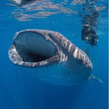

Là loài cá lớn nhất trên biển, có độ dài tối đa khoảng 12,5 mét, cá mập voi có thực đơn rất đa dạng và phong phú, tuy nhiên chúng chỉ ưa thích các sinh vật phù du. Chúng thường đập vây vào các rặng san hô sau đó há chiếc miệng khổng lồ ra và húp trọn các lòai sinh vật phù du này.

Giống như loài cá voi trắng, Cá nhám voi không có hàm răng sắc nhọn. cơ chế lọc thức ăn của chúng vô cùng đặc biệt trong thế giới các loài động vật. Khi phát hiện những sinh vật phù du, giáp xác nhỏ, nhuyễn thể hay thậm chí là các loài cá nhỏ, cá nhám voi thường bơi về phía chúng, Mở miệng và húp trọn một khối nước cực lớn, đẩy chúng vào túi chứa thức ăn sau đó khép miệng lại. Các sinh vật nhỏ bé này sẽ bị cản lại thông qua các tấm sừng màng lọc, nước bị đẩy ra. Đó là kỹ thuật “Lọc dòng chéo” trên cá nhám voi.
Đầu của cá nhám voi phẳng, phần mặt có màu xám đến nâu với các đốm trắng giữa các sọc nằm ngang và bụng màu trắng. Sở hữu chiếc đuôi có hình trăng lưỡi liềm, hai cặp vây lưng và vây ngực, lớp da dày khoảng 10cm cùng thân hình đồ sộ khiến cho vận tốc trung bình của chúng chỉ khoảng 5km/h.